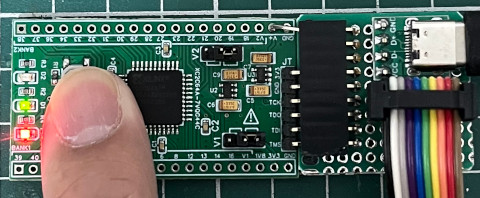

參考資訊：
http://dangerousprototypes.com/docs/CoolRunner-II_CPLD_breakout_board
http://dangerousprototypes.com/docs/CPLD:_Complex_programmable_logic_devices#Programming
main.v
module main (
input btn,
output reg led
);
initial begin
led = 0;
end
always @(*) begin
led <= ~btn;
end
endmodule
main.ucf
NET "btn" LOC = "P18"; NET "led" LOC = "P39";
完成
